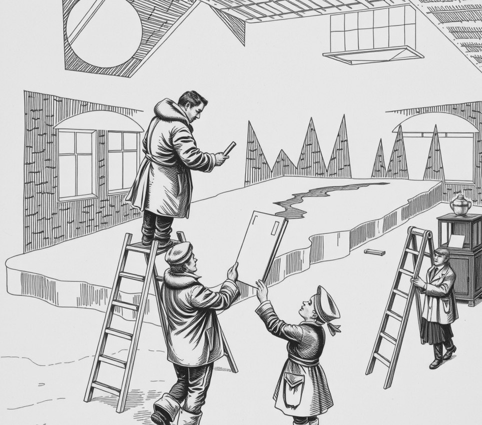

Ice Coast . 27 November 5071

Lowri Mwangi, the ice sculptor whose frozen replica of the home planet's coastline fills the main concourse, was told on Thursday that the arts committee will circle back on it.
The committee has circled back for eleven years. It first met about the coastline in the second month of carving, when the sculpture reached the Gulf of Biscay. It has since reached the Cape of Good Hope, the Bering Strait and a long stretch of Antarctica nobody asked for.
Mwangi finished in her fourth year. The committee asked her to hold the work at minus forty while members considered it. She has held it there since. The market stalls moved out in year six.
The notice, delivered by a clerk on a slate, refers to the sculpture in its "current form".
"It has no other form," Mwangi said. "It's a coastline. I could give them a lake, but that would be a different meeting."
Minutes show members approved of the work at every circle-back. Each time, a member then asked whether this was the right moment. The sculpture has lost all of Patagonia to condensation and a corner of Japan to a child.
The next meeting is on the fourteenth. The coastline is item nine, after the question of who owns the biscuits. The biscuits, kept in the concourse, are still frozen solid and perfectly fresh.